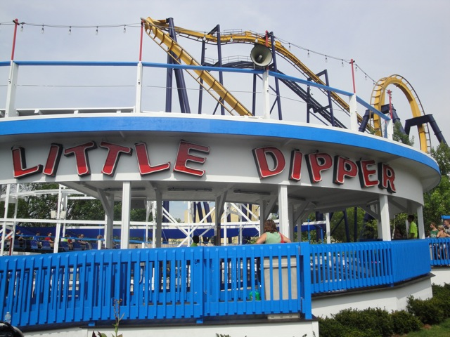

| |
Little Dipper Review

Today at Six Flags Great America, we'll be reviewing Little Dipper. This is the park's kiddy woodie. And now, for a little Ride History. Little Dipper used to operate at Kiddieland in Chicago. But then when it closed down in 2009, many Chicago locals were upset that the ride was leaving. So to boost attendence and be totally badass, Six Flags Great America bought the Little Dipper. And they were totally sucessful and got a big boost in attendence. Anyways, after clenching and squishing into the seats, we're off. We roll around a turn and head straight for the tiny little lifthill. While going up the lifthill, you don't think much other than "Wow. I am a credit whore." You then reach the top and head around a turn, then you dip down the first drop. It's actually pretty fun for a kiddy woody. You then rise up a small hill and head into a turnaround. The turn actually has some laterals for a kiddy coaster. You then dip back down and go through a microscopic hill. Now I should tell you this, you sort of bounce around on the ride. It feels pretty old even though it just got rebuilt at Six Flags Great America recently. You then head into another turnaround underneath the structure which always looks cool. You then dip down, go through a dip before reaching the brake run. While it's a very good kiddy coaster, it's still a kiddy coaster. I'd only ride it for the credit or if it has a very short line. Of course, there's the whole Nostalgia Value. But that only applies for Chicago locals. So as a guy who grew up in Southern California, that nostalgia doesn't apply to me.
4/10
Location: Six Flags Great America
Opened at Kiddieland in 1950
Moved to Six Flags Great America in 2010
Built by: Philadelphia Toboggan Coasters
Last Ridden: August 13, 2010
Little Dipper Photos

Home
|